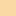
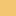
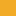
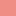

<!doctype html>
<html lang="en">
    <head>
        <meta charset="utf-8">
        <meta http-equiv="X-UA-Compatible" content="IE=edge">
        <meta name="viewport" content="initial-scale=1,user-scalable=no,maximum-scale=1,width=device-width">
        <meta name="mobile-web-app-capable" content="yes">
        <meta name="apple-mobile-web-app-capable" content="yes">
        <link rel="stylesheet" href="css/leaflet.css">
        <link rel="stylesheet" href="css/qgis2web.css"><link rel="stylesheet" href="css/fontawesome-all.min.css">
        <style>
        html, body, #map {
            width: 100%;
            height: 100%;
            padding: 0;
            margin: 0;
        }
        </style>
        <title></title>
    </head>
    <body>
        <div id="map">
        </div>
        <script src="js/qgis2web_expressions.js"></script>
        <script src="js/leaflet.js"></script>
        <script src="js/leaflet.rotatedMarker.js"></script>
        <script src="js/leaflet.pattern.js"></script>
        <script src="js/leaflet-hash.js"></script>
        <script src="js/Autolinker.min.js"></script>
        <script src="js/rbush.min.js"></script>
        <script src="js/labelgun.min.js"></script>
        <script src="js/labels.js"></script>
        <script src="data/FOT_1.js"></script>
        <script src="data/Encarnacin_2.js"></script>
        <script src="data/RoParan_3.js"></script>
        <script src="data/Puentes_4.js"></script>
        <script>
        var map = L.map('map', {
            zoomControl:true, maxZoom:28, minZoom:1
        }).fitBounds([[-27.437736603412706,-55.98021781933429],[-27.23008005661207,-55.71377549328135]]);
        var hash = new L.Hash(map);
        map.attributionControl.setPrefix('<a href="https://github.com/tomchadwin/qgis2web" target="_blank">qgis2web</a> &middot; <a href="https://leafletjs.com" title="A JS library for interactive maps">Leaflet</a> &middot; <a href="https://qgis.org">QGIS</a>');
        var autolinker = new Autolinker({truncate: {length: 30, location: 'smart'}});
        var bounds_group = new L.featureGroup([]);
        function setBounds() {
        }
        map.createPane('pane_GoogleSatellite_0');
        map.getPane('pane_GoogleSatellite_0').style.zIndex = 400;
        var layer_GoogleSatellite_0 = L.tileLayer('https://mt1.google.com/vt/lyrs=s&x={x}&y={y}&z={z}', {
            pane: 'pane_GoogleSatellite_0',
            opacity: 0.652,
            attribution: '<a href="https://www.google.at/permissions/geoguidelines/attr-guide.html">Map data ©2015 Google</a>',
            minZoom: 1,
            maxZoom: 28,
            minNativeZoom: 0,
            maxNativeZoom: 20
        });
        layer_GoogleSatellite_0;
        map.addLayer(layer_GoogleSatellite_0);
        function pop_FOT_1(feature, layer) {
            var popupContent = '<table>\
                    <tr>\
                        <th scope="row">NOM_AMBITO</th>\
                        <td>' + (feature.properties['NOM_AMBITO'] !== null ? autolinker.link(feature.properties['NOM_AMBITO'].toLocaleString()) : '') + '</td>\
                    </tr>\
                    <tr>\
                        <th scope="row">ALTURA_MAX</th>\
                        <td>' + (feature.properties['ALTURA_MAX'] !== null ? autolinker.link(feature.properties['ALTURA_MAX'].toLocaleString()) : '') + '</td>\
                    </tr>\
                    <tr>\
                        <th scope="row">FOT</th>\
                        <td>' + (feature.properties['FOT'] !== null ? autolinker.link(feature.properties['FOT'].toLocaleString()) : '') + '</td>\
                    </tr>\
                    <tr>\
                        <th scope="row">FOS</th>\
                        <td>' + (feature.properties['FOS'] !== null ? autolinker.link(feature.properties['FOS'].toLocaleString()) : '') + '</td>\
                    </tr>\
                    <tr>\
                        <th scope="row">FIT</th>\
                        <td>' + (feature.properties['FIT'] !== null ? autolinker.link(feature.properties['FIT'].toLocaleString()) : '') + '</td>\
                    </tr>\
                    <tr>\
                        <th scope="row">FAP</th>\
                        <td>' + (feature.properties['FAP'] !== null ? autolinker.link(feature.properties['FAP'].toLocaleString()) : '') + '</td>\
                    </tr>\
                    <tr>\
                        <th scope="row">ALT_BASE</th>\
                        <td>' + (feature.properties['ALT_BASE'] !== null ? autolinker.link(feature.properties['ALT_BASE'].toLocaleString()) : '') + '</td>\
                    </tr>\
                    <tr>\
                        <th scope="row">GRAFICO</th>\
                        <td>' + (feature.properties['GRAFICO'] !== null ? autolinker.link(feature.properties['GRAFICO'].toLocaleString()) : '') + '</td>\
                    </tr>\
                </table>';
            layer.bindPopup(popupContent, {maxHeight: 400});
        }

        function style_FOT_1_0(feature) {
            switch(String(feature.properties['FOT'])) {
                case '1.5':
                    return {
                pane: 'pane_FOT_1',
                stroke: false, 
                fill: true,
                fillOpacity: 1,
                fillColor: 'rgba(162,211,212,1.0)',
                interactive: true,
            }
                    break;
                case '2':
                    return {
                pane: 'pane_FOT_1',
                stroke: false, 
                fill: true,
                fillOpacity: 1,
                fillColor: 'rgba(250,217,165,1.0)',
                interactive: true,
            }
                    break;
                case '2.5':
                    return {
                pane: 'pane_FOT_1',
                stroke: false, 
                fill: true,
                fillOpacity: 1,
                fillColor: 'rgba(243,198,113,1.0)',
                interactive: true,
            }
                    break;
                case '3':
                    return {
                pane: 'pane_FOT_1',
                stroke: false, 
                fill: true,
                fillOpacity: 1,
                fillColor: 'rgba(242,171,39,1.0)',
                interactive: true,
            }
                    break;
                case '4':
                    return {
                pane: 'pane_FOT_1',
                stroke: false, 
                fill: true,
                fillOpacity: 1,
                fillColor: 'rgba(239,142,133,1.0)',
                interactive: true,
            }
                    break;
                case '5':
                    return {
                pane: 'pane_FOT_1',
                stroke: false, 
                fill: true,
                fillOpacity: 1,
                fillColor: 'rgba(235,76,60,1.0)',
                interactive: true,
            }
                    break;
                case '6':
                    return {
                pane: 'pane_FOT_1',
                stroke: false, 
                fill: true,
                fillOpacity: 1,
                fillColor: 'rgba(186,59,46,1.0)',
                interactive: true,
            }
                    break;
                case '7':
                    return {
                pane: 'pane_FOT_1',
                stroke: false, 
                fill: true,
                fillOpacity: 1,
                fillColor: 'rgba(87,122,156,1.0)',
                interactive: true,
            }
                    break;
                default:
                    return {
                pane: 'pane_FOT_1',
                stroke: false, 
                fill: true,
                fillOpacity: 1,
                fillColor: 'rgba(255,255,255,0.0)',
                interactive: true,
            }
                    break;
            }
        }
        map.createPane('pane_FOT_1');
        map.getPane('pane_FOT_1').style.zIndex = 401;
        map.getPane('pane_FOT_1').style['mix-blend-mode'] = 'normal';
        var layer_FOT_1 = new L.geoJson(json_FOT_1, {
            attribution: '',
            interactive: true,
            dataVar: 'json_FOT_1',
            layerName: 'layer_FOT_1',
            pane: 'pane_FOT_1',
            onEachFeature: pop_FOT_1,
            style: style_FOT_1_0,
        });
        bounds_group.addLayer(layer_FOT_1);
        map.addLayer(layer_FOT_1);
        function pop_Encarnacin_2(feature, layer) {
            var popupContent = '<table>\
                    <tr>\
                        <td colspan="2">' + (feature.properties['id'] !== null ? autolinker.link(feature.properties['id'].toLocaleString()) : '') + '</td>\
                    </tr>\
                    <tr>\
                        <td colspan="2">' + (feature.properties['AREA'] !== null ? autolinker.link(feature.properties['AREA'].toLocaleString()) : '') + '</td>\
                    </tr>\
                </table>';
            layer.bindPopup(popupContent, {maxHeight: 400});
        }

        function style_Encarnacin_2_0() {
            return {
                pane: 'pane_Encarnacin_2',
                opacity: 1,
                color: 'rgba(255,255,255,1.0)',
                dashArray: '',
                lineCap: 'butt',
                lineJoin: 'miter',
                weight: 2.0, 
                fillOpacity: 0,
                interactive: false,
            }
        }
        map.createPane('pane_Encarnacin_2');
        map.getPane('pane_Encarnacin_2').style.zIndex = 402;
        map.getPane('pane_Encarnacin_2').style['mix-blend-mode'] = 'normal';
        var layer_Encarnacin_2 = new L.geoJson(json_Encarnacin_2, {
            attribution: '',
            interactive: false,
            dataVar: 'json_Encarnacin_2',
            layerName: 'layer_Encarnacin_2',
            pane: 'pane_Encarnacin_2',
            onEachFeature: pop_Encarnacin_2,
            style: style_Encarnacin_2_0,
        });
        bounds_group.addLayer(layer_Encarnacin_2);
        map.addLayer(layer_Encarnacin_2);
        function pop_RoParan_3(feature, layer) {
            var popupContent = '<table>\
                    <tr>\
                        <td colspan="2">' + (feature.properties['area'] !== null ? autolinker.link(feature.properties['area'].toLocaleString()) : '') + '</td>\
                    </tr>\
                </table>';
            layer.bindPopup(popupContent, {maxHeight: 400});
        }

        function style_RoParan_3_0() {
            return {
                pane: 'pane_RoParan_3',
                stroke: false, 
                fill: true,
                fillOpacity: 1,
                fillColor: 'rgba(67,67,67,1.0)',
                interactive: false,
            }
        }
        map.createPane('pane_RoParan_3');
        map.getPane('pane_RoParan_3').style.zIndex = 403;
        map.getPane('pane_RoParan_3').style['mix-blend-mode'] = 'normal';
        var layer_RoParan_3 = new L.geoJson(json_RoParan_3, {
            attribution: '',
            interactive: false,
            dataVar: 'json_RoParan_3',
            layerName: 'layer_RoParan_3',
            pane: 'pane_RoParan_3',
            onEachFeature: pop_RoParan_3,
            style: style_RoParan_3_0,
        });
        bounds_group.addLayer(layer_RoParan_3);
        map.addLayer(layer_RoParan_3);
        function pop_Puentes_4(feature, layer) {
            var popupContent = '<table>\
                    <tr>\
                        <td colspan="2">' + (feature.properties['id'] !== null ? autolinker.link(feature.properties['id'].toLocaleString()) : '') + '</td>\
                    </tr>\
                </table>';
            layer.bindPopup(popupContent, {maxHeight: 400});
        }

        function style_Puentes_4_0() {
            return {
                pane: 'pane_Puentes_4',
                stroke: false, 
                fill: true,
                fillOpacity: 1,
                fillColor: 'rgba(255,255,255,1.0)',
                interactive: false,
            }
        }
        map.createPane('pane_Puentes_4');
        map.getPane('pane_Puentes_4').style.zIndex = 404;
        map.getPane('pane_Puentes_4').style['mix-blend-mode'] = 'normal';
        var layer_Puentes_4 = new L.geoJson(json_Puentes_4, {
            attribution: '',
            interactive: false,
            dataVar: 'json_Puentes_4',
            layerName: 'layer_Puentes_4',
            pane: 'pane_Puentes_4',
            onEachFeature: pop_Puentes_4,
            style: style_Puentes_4_0,
        });
        bounds_group.addLayer(layer_Puentes_4);
        map.addLayer(layer_Puentes_4);
        var baseMaps = {};
        L.control.layers(baseMaps,{' Puentes': layer_Puentes_4,' Río Paraná': layer_RoParan_3,' Encarnación': layer_Encarnacin_2,'FOT<br /><table><tr><td style="text-align: center;"></td><td>1.5</td></tr><tr><td style="text-align: center;"></td><td>2</td></tr><tr><td style="text-align: center;"></td><td>2.5</td></tr><tr><td style="text-align: center;"></td><td>3</td></tr><tr><td style="text-align: center;"></td><td>4</td></tr><tr><td style="text-align: center;"></td><td>5</td></tr><tr><td style="text-align: center;"></td><td>6</td></tr><tr><td style="text-align: center;"></td><td>7</td></tr><tr><td style="text-align: center;"></td><td></td></tr></table>': layer_FOT_1,"Google Satellite": layer_GoogleSatellite_0,}).addTo(map);
        setBounds();
        </script>
    </body>
</html>
